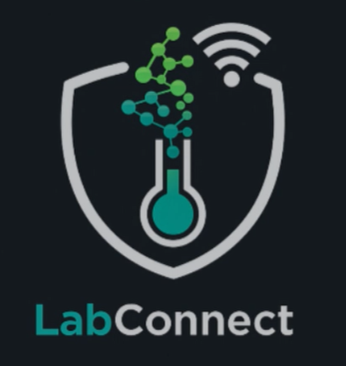

Nome do projeto: LabConnect
Categoria: Acadêmico
Semestre: 6DSM – 6º Semestre
Linguagens utilizadas: TypeScript — 56,1%, CSS — 21,4%, Python — 17,2%, JavaScript — 3%, PLpgSQL — 1,7%, HTML — 0,5%, Dockerfile — 0,1%.
Repositório: GitHub – LabConnect
O LabConnect é um sistema inteligente de atendimento e orientação ao consumidor, desenvolvido para facilitar o acesso às informações e aos serviços oferecidos pelo PROCON. A solução utiliza um chatbot integrado ao WhatsApp para esclarecer dúvidas, identificar problemas de consumo e apresentar orientações baseadas nas informações oficiais do órgão. Quando necessário, o sistema prevê o encaminhamento para atendimento presencial, incluindo a possibilidade de agendamentos e orientações sobre os documentos necessários.
O projeto também contempla uma base de conhecimento, fluxos decisórios e recursos de inteligência artificial para auxiliar na análise dos casos apresentados. As respostas possuem caráter orientativo, sem substituir o atendimento oficial ou oferecer decisões jurídicas definitivas.
Minha participação concentrou-se principalmente na infraestrutura e na estruturação das orientações do sistema. Trabalhei na configuração do ambiente de desenvolvimento utilizando Docker, incluindo Dockerfiles, Docker Compose e ajustes nos arquivos de configuração. Também realizei testes para verificar a inicialização dos containers e o funcionamento do frontend na porta 5173.
Além disso, contribuí com a documentação da estrutura da orientação final, por meio do arquivo docs/orientacao-final.md, e desenvolvi o modelo Orientacao em TypeScript, localizado em backend/src/models/orientacao.ts. Essas contribuições ajudaram a formalizar a estrutura das orientações produzidas pelos fluxos decisórios e a padronizar o ambiente de desenvolvimento do projeto.